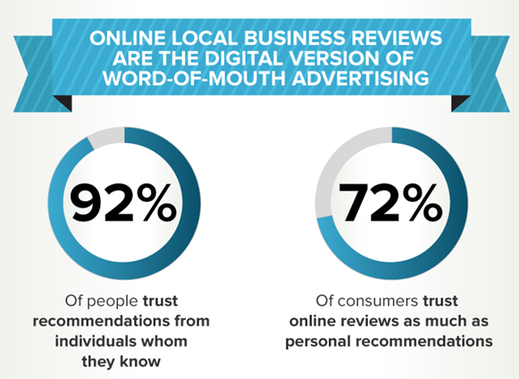
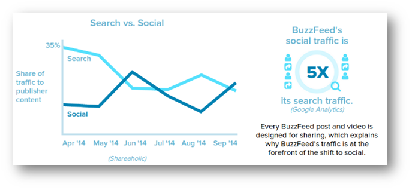
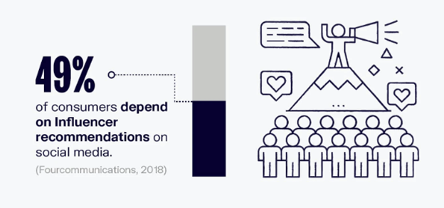

If you are a startup and planning on your digital marketing campaign, don’t forget to include a social media marketing strategy in it, as these platforms offer significant social signals that are important for your brand’s SEO digital marketing campaign.
This powerful key to success is advantageous for everyone, whether you are a startup, a small business or an enterprise. If you are missing interacting with your audience with social media platforms like Facebook, Instagram, Twitter, etc., you are missing out on a significant opportunity.
It makes it easy for you to spread the word about your brand and brings you remarkable success with an outstanding return on investment.
Social Media Marketing Is No More A Need But A Necessity
In today’s world, where almost 4.20 million, meaning nearly 53% of the world’s population are active users on different social media channels, it has become crucial for businesses to integrate social media interference in their digital marketing plan.
Social media marketing for your brand goes a long way and creates a significant influence on its user, be it regarding a brand too. Your digital marketing campaign is like a tourist wandering around the forest without a map without a social media marketing strategy.
Dwelling further into the advantages of social media intervention, some prominent ones include:
1. Customers Look Up To Social Media For Recommendations
When one of your customers shares their experience with your brand on any social platform, it goes a long way and helps you insight into your product and leverages you to build trust with new leads.

You can ask your clienteles to leave reviews on your social page and ask them to recommend your brand among their friend and family circle on social media. According to a survey, 54% of the customers today use social media to search for a product by looking at reviews and recommendations, making it essential for brands to implement word-of-mouth social media strategy in their digital marketing plan.
2. It Helps In Increasing Your Brand Recognition
Another plus of social media marketing is that it provides you with a platform to help you boost your brand image. More people get interested in discovering your brand and become a follower of it. Ensure your page has your company logo that most brands fail to provide and ensure adding a perfect page handle that reflects your brand.
You can also enhance your brand awareness by telling the audience your persona with Facebook live and Instagram stories. According to resources, 91% of the marketers claimed increased brand visibility after augmenting their social media marketing efforts.
3. Builds An Active Relationship With Your Customers
Social media is probably the best way to build relationships with leads and customers and brings modest traffic to your business. You can actually transform the destiny of your brand.
Social media also helps you pitch some influencer from the same niche as you are but make sure the content your brand is presenting is relevant and connects to your audience. However, try not to pitch your audience directly. Create authentic engagements like Q/A sessions, polls, etc., over the shared interests.
4. Drives Potential Audience To Your Brand And Website
Social media gives you access to a worldwide market and provides you with a greater opportunity to increase your inbound traffic. However, many businesses lack providing engaging content regularly, which makes them fail to bring new leads back to their site.

Each content you generate and post brings you an endless opportunity to get new visitors to your site. The better quality content you are posting, the greater your chances of engaging with new leads and converting them into customers.
5. Leads To The higher Conversion Rates
Social media strategy can give your business a thriving experience when the ball comes to lead generation and higher conversion. The UK’s best essay writing service states that every post you update on your social media channels provides you with an opportunity to intensify your conversion rates.
If your content is serving the needs and the interest of your audience, there are high chances of it converting them into leads and then happy customers. But make sure you post such content with consistency and not get lost halfway. Otherwise, it will give a wrong impression, and your lead might lose interest and never come back.
6. Builds Your Brand’s Loyalty
The social media presence of your brand makes it easier for your leads to find you and connect with you. The more you connect with your leads and customers on social media, the more you will likely increase your customer retention and loyalty.
Upsurging your customer engagement and developing a pleasant bond with them helps you improve your brand loyalty and lets you enjoy better customer communication and satisfaction. You can also turn your contented customers into brand advocates, which again has its own benefits.
7. A Perfect Addition To Your PR Strategy
Press announcements are a vital part of digital marketing strategy, especially when bringing a new product or service to the market, so many people can be aware of it.

Social media marketing strategy helps you fetch some fantastic bloggers and influencers who expertise in your forte and can work for you in return for a specific pay and show your product to their vast number of followers.
Studies reveal that 49% of consumers today depend on social media influencers to make a purchase online, which means the better your PR strategy is, the greater is your ROI.
8. It’s Extremely Cost-Effective
Social media marketing is the most cost-effective strategy of the digital marketing plan. It’s all a free and fantastic way to reach your target audience until you decide to proceed with paid advertisings. Nevertheless, you can still go with paid advertisements like pay per click. In pay per click, you only pay when a user clicks on your ad, and you have a possibility of conversion, unlike the traditional newspapers.
For instance, you are outsourcing your essay from an academic writing website. You don’t pay for essay UK until you have the write-up handy with you; the same is the way with PPC.
However, start small first to see what you should expect. Just by financing a tiny budget and time, you can quickly increase your conversion rates and get a significant return on investment.
9. Helps You Track Your Competitors
Jumping on the social media bandwagon, you can easily track your competitor’s move and have an insight into their social media presence. In today’s world, to thrive in the digital marketplace, brands must stand toe-and-toe with their competition and leverage the use of social media.
It is also considered that your business is unprofessional and bogus if it doesn’t appear on social media. In such a case, your competitor can easily overshadow you and takeover your potential customers to increase the traffic on their site and earn better sales.
About the Author
Stella Lincoln is an Assistant Editor at Assignment Assistance and Dissertation Assistance, two of the perfect platforms to outsource your essay editing service. Stella is also a social media freak and loves to spend her leisure time scrolling through different channels.
Daniel Aaron says
I agree with your words that whenever startup a business, a social media marketing strategy is necessary. It helps you to fetch some fantastic bloggers and influencers who have expertise in your forte and can work for you in return for a specific payment.
Elaina M says
…can work for a specific payment or free goods/products at that